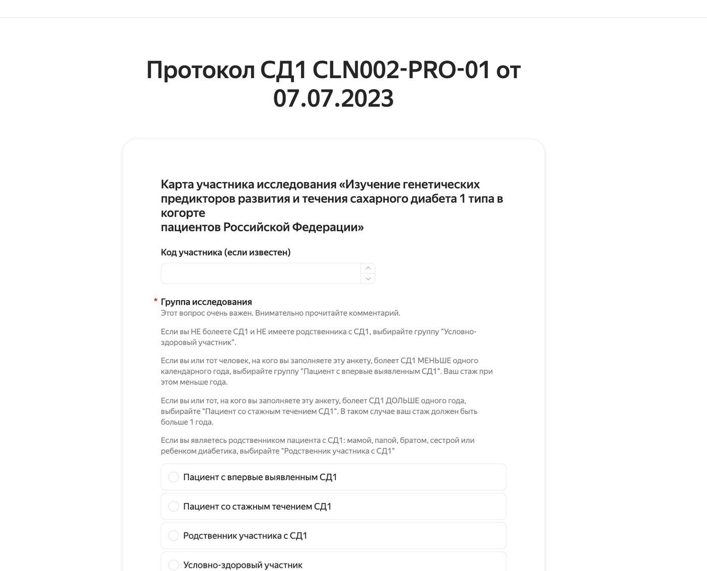

1. Что такое продуктовый дизайн
В этой главе
Продуктовый дизайнер отвечает за то, чтобы продукт решал задачу человека и задачу бизнеса одновременно. Экраны здесь только одна из форм работы. Не меньше времени уходит на исследования, постановку задачи, логику, состояния, проверку и разговоры с командой.
Чем продуктовый дизайн отличается от соседних профессий
Названия должностей на рынке пересекаются, поэтому полезно различать сами работы.
| Работа | Главный вопрос | Результат |
|---|---|---|
| Графический дизайн | Как сообщение выглядит и запоминается | Айдентика, плакаты, иллюстрации |
| UI-дизайн | Как устроен экран: сетка, типографика, цвет, компоненты | Макеты, библиотека компонентов |
| UX-дизайн | Как человек проходит путь и где спотыкается | Сценарии, прототипы, результаты тестов |
| Продуктовый дизайн | Какую задачу решаем, для кого, что считать успехом и как это проверить | Решение целиком: от постановки до приёмки и метрик |
| UX-исследования | Что люди делают на самом деле и почему | Находки, инсайты, рекомендации |
| Дизайн-аналитика | Что показывают данные о поведении | Метрики, воронки, модели эффекта |
Продуктовый дизайнер умеет всё из этой таблицы на рабочем уровне. Глубже всего он погружён в постановку задачи и в решение, которое потом реально строят и измеряют.
Что входит в работу
Типичный цикл выглядит так:
- Понять проблему: кто страдает, где, сколько это стоит.
- Собрать ограничения: законы, протоколы, технические возможности, сроки, деньги.
- Найти решение: сценарии, логика, состояния, интерфейс.
- Проверить решение: прототип, тест с людьми, прогон сценариев, аудит.
- Передать в разработку и принять результат.
- Измерить эффект и решить, что делать дальше.
Шаги идут по кругу. Находка на шаге 4 часто возвращает к шагу 1. Почему так: проверка показывает, правильно ли поняли проблему, и иногда выясняется, что нет. Возврат к началу дешевле, чем доводить до запуска решение не той задачи.


Три стороны решения
Хорошее продуктовое решение одновременно:
- ценно для человека: он решает свою задачу быстрее, спокойнее, с меньшим числом ошибок;
- выгодно для бизнеса: растёт удержание, падают затраты, появляются новые возможности;
- выполнимо: его можно построить в имеющихся сроках, на имеющейся технике и в рамках закона.
Если одна сторона проседает, решение не живёт. Почему: каждая сторона держит решение по-своему. Без ценности им не пользуются, без выгоды его не развивают, без выполнимости его не построят. Красивый экран, который нельзя построить, остаётся картинкой. Выполнимое решение без ценности для человека никто не использует.
Роль дизайнера в команде
Продуктовый дизайнер работает на стыке нескольких ролей.
| Роль | Что от неё получает дизайнер | Что отдаёт |
|---|---|---|
| Продакт-менеджер | Цели, приоритеты, рамки | Варианты решения с ценой каждого |
| Разработка | Ограничения, оценку сложности | Спецификацию, состояния, крайние случаи |
| Аналитика | Данные о поведении | Гипотезы, план измерений |
| Заказчик или эксперт предметной области | Правила процесса | Вопросы, на которые нужно решение |
| Поддержка | Жалобы и частые вопросы | Тексты, сценарии ошибок |
В маленьких командах один дизайнер часто закрывает роли продакта и аналитика. Тогда особенно важно раздельно записывать, что решил сам дизайнер, что решил заказчик и что предложили коллеги.
Жизненный цикл продукта
Задачи дизайнера меняются от стадии продукта.
| Стадия | Главная задача | Что делает дизайнер |
|---|---|---|
| Поиск | Понять, есть ли проблема и стоит ли её решать | Интервью, анализ рынка, концепции |
| Первая версия | Собрать минимальный путь, который решает задачу | Сценарии, прототип, приоритизация |
| Рост | Убрать трение, расширить аудиторию | Тесты, метрики, оптимизация пути |
| Зрелость | Держать качество и согласованность | Дизайн-система, аудиты, доступность |
| Замена | Перевести людей на новое решение без потерь | Миграция, переходные состояния |
Многие ошибки идут от того, что инструменты одной стадии применяют на другой. Например, на стадии поиска полировать визуальный язык рано, а на стадии зрелости поздно выяснять, кто пользователь.
Работа без полных данных
Данных почти никогда не хватает. Профессиональный ответ на это:
- Явно записать допущения и пометить их как допущения. Почему: иначе через месяц догадка начнёт выглядеть как факт, и на ней построят новые решения.
- Давать диапазон вместо точной цифры, если точной нет. Почему: точная цифра без основания создаёт ложную уверенность, а диапазон честно показывает неопределённость.
- Назвать, как и когда допущение проверить. Почему: без плана проверки допущение так и останется непроверенным.
- Не утверждать неизмеренное. Почему: одно опровергнутое утверждение подрывает доверие ко всем остальным.
Ограничения как материал
Ограничения не мешают дизайну. Из них растут решения.
Полезная привычка: в начале проекта вести отдельный список ограничений с источником каждого. Почему: когда решение оспаривают, ссылка на ограничение и его источник заканчивает спор быстрее любых доводов о вкусе.
Чем измеряется работа дизайнера
Работу продуктового дизайнера оценивают по результату для продукта:
- Решена ли задача человека (успешность сценария, время, ошибки). Почему: ради этого продукт и существует.
- Изменилась ли бизнес-метрика (удержание, конверсия, нагрузка на сотрудников). Почему: решение, которое ничего не меняет для бизнеса, не получит развития.
- Сколько стоило решение команде (сроки, число переделок). Почему: дорогое решение отнимает ресурс у других задач.
- Насколько решение устойчиво (держится ли при росте, новых ролях, новых исследованиях). Почему: продукт меняется, и решение, которое ломается от первого изменения, придётся переделывать.
Количество экранов и красота макета в этот список не входят. Почему: это средства, а оценивают результат.
Главное в главе
- Продуктовый дизайн отвечает за решение целиком, от проблемы до измеренного эффекта.
- Решение должно быть ценным, выгодным и выполнимым одновременно.
- Ограничения записывают с источником: из них растут решения.
- Допущения называют допущениями, неизмеренное не утверждают.
- Своё, общее и чужое в работе записывают раздельно.
Вопросы для самопроверки
- Чем результат продуктового дизайнера отличается от результата UI-дизайнера?
- Приведите пример решения, которое ценно для человека, но не выполнимо. Что с ним делать?
- Какие ограничения вашего текущего проекта вы можете назвать с источником?
- Как бы вы описали цель, для которой у вас нет базового уровня?
Упражнение
Возьмите любой сервис, которым пользуетесь. Запишите в три колонки: что он даёт человеку, что он даёт бизнесу, какие ограничения он явно учитывает. Найдите одно место, где одна из сторон проседает, и предложите, как это проверить.